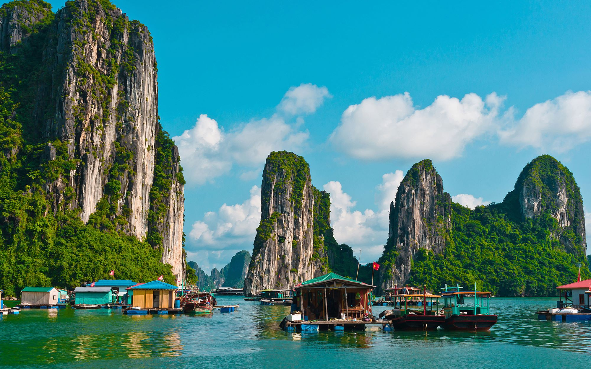

Là trung tâm của một khu vực rộng lớn có những yếu tố ít nhiều tương đồng về địa chất, địa mạo, cảnh quan, khí hậu và văn hóa, với vịnh Bái Tử Long phía Đông Bắc và quần đảo Cát Bà phía Tây Nam, vịnh Hạ Long giới hạn trong diện tích khoảng 1.553 km² bao gồm 1.969 hòn đảo lớn nhỏ, phần lớn là đảo đá vôi, trong đó vùng lõi của vịnh có diện tích 335 km² quần tụ dày đặc 775 hòn đảo. Lịch sử kiến tạo địa chất đá vôi của vịnh đã trải qua khoảng 500 triệu năm với những hoàn cảnh cổ địa lý rất khác nhau; và quá trình tiến hóa karst đầy đủ trải qua trên 20 triệu năm với sự kết hợp các yếu tố như tầng đá vôi dày, khí hậu nóng ẩm và tiến trình nâng kiến tạo chậm chạp trên tổng thể. Sự kết hợp của môi trường, khí hậu, địa chất, địa mạo, đã khiến vịnh Hạ Long trở thành quần tụ của đa dạng sinh học bao gồm hệ sinh thái rừng kín thường xanh mưa ẩm nhiệt đới và hệ sinh thái biển và ven bờ với nhiều tiểu hệ sinh thái. 17 loài thực vật đặc hữu và khoảng 60 loài động vật đặc hữu đã được phát hiện trong số hàng ngàn động, thực vật quần cư tại vịnh.